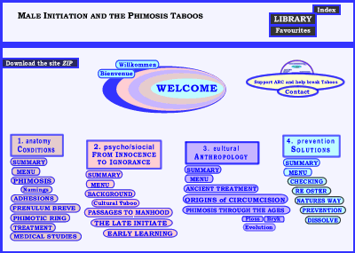

Male Initiation and the Phimosis Taboos


German version .........................French version
English Version
This site is the most complete research data base on Phimosis up until year 2,000 - with Medical texts back to 1920 and Diderot - Anthropology back to Ploss and Bryk and Grey who summarised the previous thinking - I answered at least 5,000 emails - analysed the physical, sexual and ultimately psychological effects of a previously ignored part of the external male body ... realised how this has influenced cultures and relationships throughout our development - AND had the experience of my life ... against expert opinion and so much bias on circumcision .... at the beginning of internet with bleeping modems, no flat rate, an atari computer, a few good friends, it was hair raising and hysterical and now, looking back, wonderful and incredible.
Modern thinking about male initiation often rejects any idea of the penis and emphasises the caring father figure. Such thinking is rather naive: in many ancient cultures the top male cared for and gave to his people ... also in addition to this, many ancient cultures had an awareness of phimosis and the need for some form of treatment ... modern thinking on Male Initiation should include care for Phimosis.
This site was also the first data base on Atypical Penis Fracture - Penile Nerve Trauma
A large part of my motivation to start this project was due to these two problems occurring together. Mine appears to be the only case where this has happened - I consider it now as an unfortunate coincidence. In my opinion these 2 conditions have no direct relationship.
|